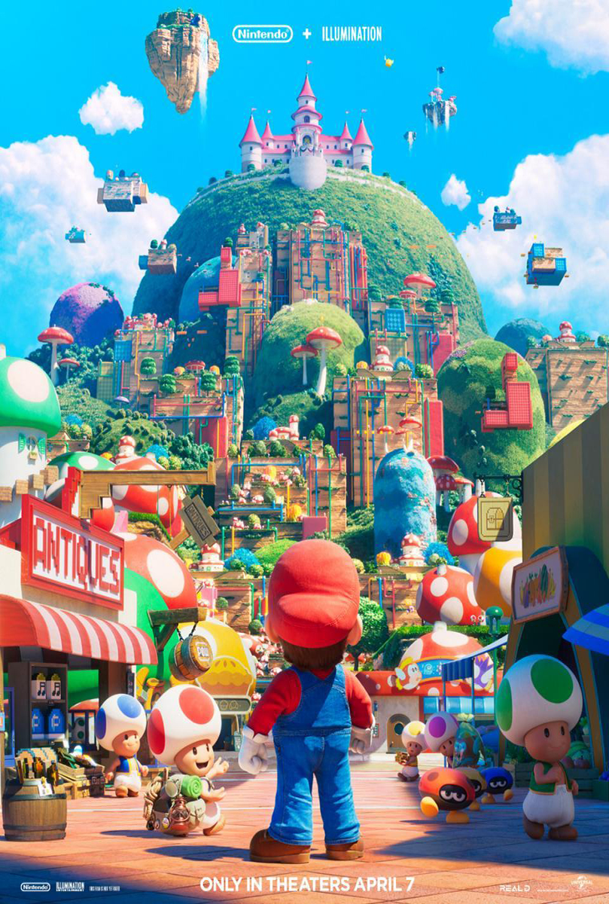

Películas en cartelera
Desde 18/05/2023 al 24/05/2023
No descansaras | 2D Cast.
Después de años de luchar para formar una familia, Julie Rivers (Melissa Barrera) está embarazada nuevamente y se muda a un nuevo hogar con su esposo mientras abrazan un nuevo comienzo. Al recibir la orden de reposo en cama obligatorio, Julie comienza a desmoronarse lentamente mientras sufre la monotonía y la ansiedad de sus nuevas limitaciones. Pronto, las aterradoras experiencias fantasmales en el hogar comienzan a acechar a Julie, despertando sus demonios pasados y haciendo que otros cuestionen su estabilidad mental. Atrapada y obligada a enfrentar su pasado y lo sobrenatural, Julie lucha para protegerse a sí misma y a su bebé por nacer.
Género: Terror
Director: Lori Evans Taylor
Protagonistas: Melissa Barrera, Guy Burnet, Kristen Harris
Clasificación: +13

Objetos | 2D Cast.
Mario trabaja en un gran almacén de objetos perdidos donde custodia todo tipo de enseres acumulados durante décadas. Hace tiempo que decidió apartarse de las personas e invierte su tiempo libre en investigar la procedencia de los objetos para devolver a sus dueños pedazos perdidos de sus vidas. Tan sólo Helena, una joven policía que visita el almacén con frecuencia, ha podido traspasar levemente su coraza. Un día llega al almacén una maleta rescatada del fondo del río. Dentro, encuentra ropa de bebé junto a unos restos humanos. Mario decide investigar por su cuenta y siguiendo el rastro de la maleta llega hasta Sara, una joven atrapada desde niña en una organización de tráfico de personas. Una red que trata a las personas como si fueran objetos.
Género: Suspenso
Director: Jorge Dorado
Protagonistas: Álvaro Morte, María Eugenia Suárez, Daniel Araoz, Verónica Echegui
Clasificación: +16
Rápidos y furiosos X | 2D Cast.
Comienza el final del camino. Rápidos y furiosos X, la décima película de la saga Rápidos y furiosos, es el capítulo final de una de las franquicias más populares y queridas del cine, ahora en su tercera década y continuando con el mismo elenco y personajes que cuando comenzó. A través de varias misiones y contra lo imposible, Dom Toretto (Vin Diesel) y su familia han sido más astutos y más rápidos que todos los enemigos se le han cruzado en su camino. Ahora se enfrentan a su enemigo más letal: una amenaza aterradora que surge de las sombras del pasado que está alimentado de una venganza sangrienta, y está decidido a destruir a su familia y destruir todo, y a cualquier persona, A los que Dom ama. En Rápidos y furiosos: 5in control, de 2011, Dom y su equipo derrotaron al infame líder de la droga brasileña Hernan Reyes y destruyeron su imperio en un puente de Rio de Janeiro. Lo que no sabían era que el hijo de Reyes, Dante (Jason Momoa, de Aquaman) presenció todo y ha pasado 12 años creando un plan para que Dom pague el precio más alto. El plan de Dante llevará a la familia de Dom de Los Ángeles a las catacumbas de Roma, de Brasil a Londres, y de Portugal a la Antártida. Se forjaran nuevos aliados y resurgirán viejos enemigos. Pero todo cambia cuando Dom descubre que su hijo de 8 años (Leo Abelo Perry, Black-ish) es el objetivo final de la venganza de Dante.
Género: Acción
Director: Louis Leterrier
Protagonistas: Brie Larson, Jason Momoa, Michelle Rodriguez, Vin Diesel
Clasificación: +13
Rápidos y furiosos X | 2D Sub.
Comienza el final del camino. Rápidos y furiosos X, la décima película de la saga Rápidos y furiosos, es el capítulo final de una de las franquicias más populares y queridas del cine, ahora en su tercera década y continuando con el mismo elenco y personajes que cuando comenzó. A través de varias misiones y contra lo imposible, Dom Toretto (Vin Diesel) y su familia han sido más astutos y más rápidos que todos los enemigos se le han cruzado en su camino. Ahora se enfrentan a su enemigo más letal: una amenaza aterradora que surge de las sombras del pasado que está alimentado de una venganza sangrienta, y está decidido a destruir a su familia y destruir todo, y a cualquier persona, A los que Dom ama. En Rápidos y furiosos: 5in control, de 2011, Dom y su equipo derrotaron al infame líder de la droga brasileña Hernan Reyes y destruyeron su imperio en un puente de Rio de Janeiro. Lo que no sabían era que el hijo de Reyes, Dante (Jason Momoa, de Aquaman) presenció todo y ha pasado 12 años creando un plan para que Dom pague el precio más alto. El plan de Dante llevará a la familia de Dom de Los Ángeles a las catacumbas de Roma, de Brasil a Londres, y de Portugal a la Antártida. Se forjaran nuevos aliados y resurgirán viejos enemigos. Pero todo cambia cuando Dom descubre que su hijo de 8 años (Leo Abelo Perry, Black-ish) es el objetivo final de la venganza de Dante.
Género: Acción
Director: Louis Leterrier
Protagonistas: Brie Larson, Jason Momoa, Michelle Rodriguez, Vin Diesel
Clasificación: +13
Rápidos y furiosos X | 3D Cast.
Comienza el final del camino. Rápidos y furiosos X, la décima película de la saga Rápidos y furiosos, es el capítulo final de una de las franquicias más populares y queridas del cine, ahora en su tercera década y continuando con el mismo elenco y personajes que cuando comenzó. A través de varias misiones y contra lo imposible, Dom Toretto (Vin Diesel) y su familia han sido más astutos y más rápidos que todos los enemigos se le han cruzado en su camino. Ahora se enfrentan a su enemigo más letal: una amenaza aterradora que surge de las sombras del pasado que está alimentado de una venganza sangrienta, y está decidido a destruir a su familia y destruir todo, y a cualquier persona, A los que Dom ama. En Rápidos y furiosos: 5in control, de 2011, Dom y su equipo derrotaron al infame líder de la droga brasileña Hernan Reyes y destruyeron su imperio en un puente de Rio de Janeiro. Lo que no sabían era que el hijo de Reyes, Dante (Jason Momoa, de Aquaman) presenció todo y ha pasado 12 años creando un plan para que Dom pague el precio más alto. El plan de Dante llevará a la familia de Dom de Los Ángeles a las catacumbas de Roma, de Brasil a Londres, y de Portugal a la Antártida. Se forjaran nuevos aliados y resurgirán viejos enemigos. Pero todo cambia cuando Dom descubre que su hijo de 8 años (Leo Abelo Perry, Black-ish) es el objetivo final de la venganza de Dante.
Género: Acción
Director: Louis Leterrier
Protagonistas: Brie Larson, Jason Momoa, Michelle Rodriguez, Vin Diesel
Clasificación: +13

Guardianes de la Galaxia Vol. 3 | 2D Cast.
En GUARDIANES DE LA GALAXIA VOL. 3 de Marvel Studios, la querida banda de Guardianes se instala en Knowhere. Pero sus vidas no tardan en verse alteradas por los ecos del turbulento pasado de Rocket. Peter Quill, aún conmocionado por la pérdida de Gamora, debe reunir a su equipo en una peligrosa misión para salvar la vida de Rocket, una misión que, si no se completa con éxito, podría muy posiblemente conducir al final de los Guardianes tal y como los conocemos.
Género: Acción
Director: James Gunn
Protagonistas: Chris Pratt, Dave Bautista, Karen Gillan, Zoe Saldana
Clasificación: +13
Guardianes de la Galaxia Vol. 3 | 2D Sub.
En GUARDIANES DE LA GALAXIA VOL. 3 de Marvel Studios, la querida banda de Guardianes se instala en Knowhere. Pero sus vidas no tardan en verse alteradas por los ecos del turbulento pasado de Rocket. Peter Quill, aún conmocionado por la pérdida de Gamora, debe reunir a su equipo en una peligrosa misión para salvar la vida de Rocket, una misión que, si no se completa con éxito, podría muy posiblemente conducir al final de los Guardianes tal y como los conocemos.
Género: Acción
Director: James Gunn
Protagonistas: Chris Pratt, Dave Bautista, Karen Gillan, Zoe Saldana
Clasificación: +13

Misántropo | 2D Sub.
El creador de la mítica serie Los Simuladores y director de la película Relatos salvajes, nominada al Premio Oscar®, ganadora del Premio Bafta® y hasta la fecha, el film nacional más exitoso de la historia, es también autor del guion junto al británico Jonathan Wakeham. Shailene Woodley (Big Little Lies, The Fault in Our Stars, The Divergent Series) protagoniza este implacable thriller junto a Ben Mendelsohn (Rogue One: una historia de Star Wars, Ready Player One, Robin Hood). Baltimore, la noche de año nuevo. Un feroz ataque producido por un único hombre deja un saldo de 29 muertos y ni una sola pista. Eleanor Falco (Shailene Woodley), una retraída pero talentosa mujer policía de bajo rango, es reclutada por el Agente Especial del FBI Geoffrey Lammark (Ben Mendelsohn) para integrar el equipo a cargo de la identificación y captura del asesino en masa.
Género: Thriller
Director: Damian Szifron
Protagonistas: Ben Mendelsohn, Shailene Woodley
Clasificación: +16
Evil Dead: El despertar | 2D Sub.
Trasladando la acción fuera del bosque a la ciudad, "Evil Dead: El Despertar" cuenta una historia retorcida de dos hermanas separadas, interpretadas por Sutherland y Sullivan, cuya reunión se ve interrumpida por el surgimiento de demonios que poseen, arrojándolas a una batalla primordial por la supervivencia mientras se enfrentan a la versión más pesadillesca de la familia imaginable.
Género: Terror
Director: Lee Cronin
Protagonistas: Alyssa Sutherland, Lily Sullivan
Clasificación: +16

Super Mario Bros: La película | 2D Cast.
De Nintendo e Illumination llega una nueva película animada basada en el mundo de Super Mario Bros. Dirigida por by Aaron Horvath y Michael Jelenic (colaboradores en Los Jóvenes Titanes en acción, Jóvenes Titanes en acción: la película) de un guion de Matthew Fogel (La gran aventura LEGO 2, Minions: Nace un villano), la película es protagonizada por Chris Pratt como Mario, Anya Taylor-Joy como la Princesa Peach, Charlie Day como Luigi, Jack Black como Bowser, Keegan-Michael Key como Toad, Seth Rogen como Donkey Kong, Fred Armisen como Cranky Kong, Kevin Michael Richardson como Kamek y Sebastian Maniscalco como Spike.
Género: Animación
Director: Aaron Horvath, Michael Jelenic
Protagonistas: Anya Taylor-Joy, Charlie Day, Chris Pratt
Clasificación: ATP
Super Mario Bros: La película | 3D Cast.
De Nintendo e Illumination llega una nueva película animada basada en el mundo de Super Mario Bros. Dirigida por by Aaron Horvath y Michael Jelenic (colaboradores en Los Jóvenes Titanes en acción, Jóvenes Titanes en acción: la película) de un guion de Matthew Fogel (La gran aventura LEGO 2, Minions: Nace un villano), la película es protagonizada por Chris Pratt como Mario, Anya Taylor-Joy como la Princesa Peach, Charlie Day como Luigi, Jack Black como Bowser, Keegan-Michael Key como Toad, Seth Rogen como Donkey Kong, Fred Armisen como Cranky Kong, Kevin Michael Richardson como Kamek y Sebastian Maniscalco como Spike.
Género: Animación
Director: Aaron Horvath, Michael Jelenic
Protagonistas: Anya Taylor-Joy, Charlie Day, Chris Pratt
Clasificación: ATP